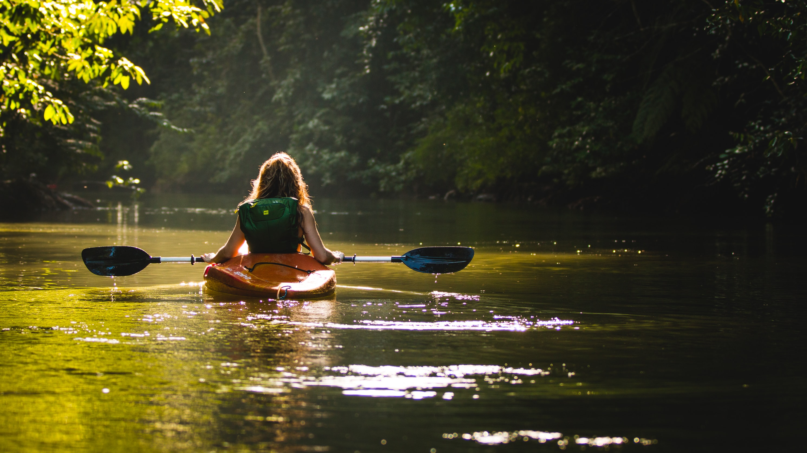

About Us
Guide-owned & operated we are a small company, allowing us to focus our energy, resources,and passion for guiding into every trip we run. Our trips are small with unparalleled personal service and a handcrafted quality and attention to detail. They are led by some of the finest guides anywhere
guides who have run some of the most difficult and beautiful rivers in the world,who love to share these places with others, and who are friendly and warm-hearted.
Momentum started with a van, two rafts, more rivers then guests, and a desire to “re-invent”vthe way rafting trips are run. Now we are honored to offer trips on all of the region's most spectacular rivers and with this region that says a lot. Although our trips and our company are still small,
the richness and diversity of this area allows us to offer river adventures with a quality and a variety that is rivaled by few.